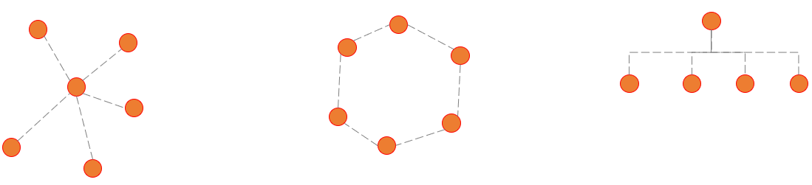

计算机网络
Network
- 内容
-
概述-自学体系结构基本技术-自学互联网概述-自学Internet基本应用-自学网络信息安全-自学
概述
- 定义
- . 一般认为，计算机网络是通过通信设施，将地理上分散的具有自治功能的多个计算机系统互连起来进行信息交换，实现资源共享、互操作和协同工作的计算机系统。 该定义包括如下特征
-
系统互连要通过通信设施来实现。通信设施一般都由通信线路、相关的传输设备及交换设备等组成计算机网络是一个互连的计算机系统。这些计算机系统在地理上是分布的这些计算机系统是自治的，在网络协议控制下协同工作系统通过通信设施执行信息交换、资源共享、互操作和协作处理，实现各种应用需求。
- 构成
- .通信子网
- .资源子网
- 分类
-
按照地理覆盖范围
.PAN - Personal Area Network
.LAN - Local Area Network
.MAN - Metropolitan Area Network
.WAN - Wide Area Network
按照网络使用者公用网络：互联网
专用网络：银行系统、铁路系统和军队系统
按照拓扑结构.星型 Star
.环型 Ring
.总线型 Bus
.混合型 Hybrid
-
 常见拓扑 - 功能
- .资源共享
- .数据传输
- .集中管理
- .分布处理
- .负载平衡
- .提高安全与可靠性
- 发展
互联网概述
Internet基本应用